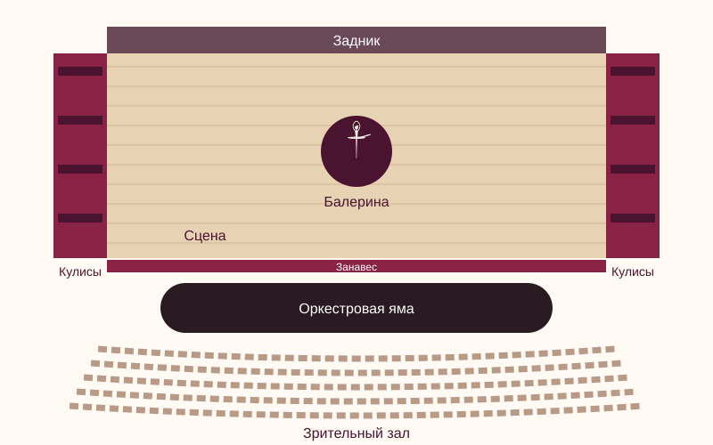

Карта балетной сцены
Перед вами схема (вид сверху) театральной сцены и зала. Нажмите на любой элемент схемы — и вы перейдёте к его описанию.

Подсказка: наведите курсор на элемент схемы, чтобы увидеть его название.
Сцена
Сцена — площадка, на которой танцуют артисты. Для балета её покрывают специальным линолеумом — балетным полом, чтобы пуанты не скользили. Во многих театрах сцена имеет небольшой наклон к зрителям.
Задник
Задник — большое расписное полотно в глубине сцены. На нём изображают место действия: озеро в «Лебедином озере», дворец в «Спящей красавице» или зимний лес в «Щелкунчике».
Кулисы
Кулисы — полосы ткани по бокам сцены. Они скрывают от зрителей артистов, ожидающих выхода, и техническое оборудование. Отсюда выражение «за кулисами».
Оркестровая яма и музыка в балете
Между сценой и залом, ниже уровня пола, находится оркестровая яма. Здесь играет оркестр, а дирижёр видит и музыкантов, и артистов на сцене. Музыка в балете задаёт ритм и настроение каждого движения: балетмейстер сочиняет танец, слушая партитуру композитора. Подробнее — на странице «Музыка в балете».